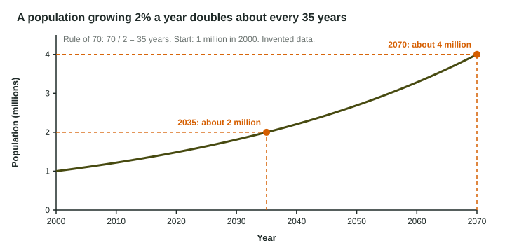

Some quantities grow by the same amount each time: a savings jar with $10 added every month. Others grow by the same percent each year: a population, energy use, or money earning interest. Percent growth speeds up, because each year's percent is taken of a bigger number. The question the exam asks most about it is "how long until it doubles?", and the rule of 70 answers it with one division.
Growth rate
A growth rate is a percent change per unit of time. A population growing 2% a year adds 2 people for every 100 each year. Start with 1,000: after one year there are 1,020; after two, ; the yearly increase keeps getting larger.
The rule of 70
For anything growing at a steady percent rate, the doubling time is about
Use the rate as a percent: for 2%, divide by 2, not by 0.02. (The 70 comes from the math of compound growth; it is accurate for the small rates you will see.)

Worked example: the doubling time. A population grows 2% a year.
Setup:
Answer: 35 years.
"In what year?"
Readers report that many students find the doubling time and stop, when the question asked for a year. The doubling time is a length of time; the year is the start year plus that time.
Worked example. A town of 50,000 people in 2024 grows 2.5% a year. In what year will it reach 100,000?
Step 1, doubling time: years.
Step 2, the year: .
Projecting several doublings
Each doubling multiplies by 2. After 2 doublings the population is 4 times as large; after 3, 8 times; after 4, 16 times.
Worked example. A population of 6 million in 2020 grows 3.5% a year. About how large will it be in 2060?
Doubling time: years. From 2020 to 2060 is 40 years, which is doublings.
Size: million (2.4 × 10⁷ = 24,000,000).
Working backward
The rule also runs the other way: growth rate ≈ 70 ÷ doubling time. Algae that double every 14 days are growing about per day.
| Growth rate (% per year) | 0.5 | 1 | 2 | 3.5 | 7 |
|---|---|---|---|---|---|
| Doubling time (years) | 140 | 70 | 35 | 20 | 10 |
Notice two things. Doubling the rate halves the doubling time. And the starting size does not matter: a city of 90,000 growing 7% doubles faster than a city of 2 million growing 0.5%.
Exam habits
- Write the setup (), then the answer with "years".
- Read the question to the end: a year, a number of years, or a population size?
- Keep the scale: "24 million", not "24".